Multi-instrumentiste, je vous propose de vous accompagner dans l'apprentissage musical aussi bien sur la théorie que sur la pratique instrumentale de la contrebasse, de la guitare, de la basse, du ukulélé et de l' harmonica...
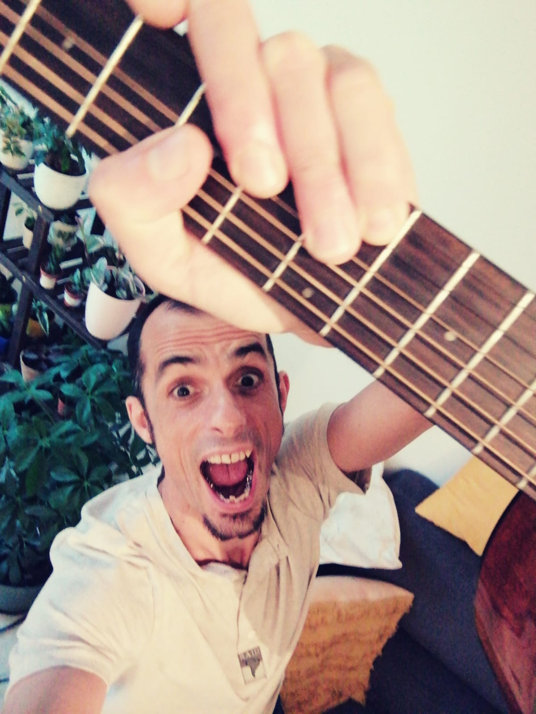Autodidacte et passionné, j'ai beaucoup travaillé sur l'improvisation et la composition. sur mon looper ou en groupe. En outre, je suis aussi musiciens de studio et de concert pour différentes formations. Coach de groupes pendant leur répétition, mise en place de leur morceaux ( reprise ou composition).
8 ans d'enseignement de la conduite m'ont permis d’acquérir les qualités essentielles au métier d'enseignant : la patience, le sens de l'écoute, la pédagogie et la rigueur.
Aujourd'hui j'ai à cœur de partager mes nombreuses années d’expérience avec vous. Apprenez à jouer avec une bonne posture afin d'éviter les problèmes musculaires qui surviennent lorsque que l'on débute un instrument.
C'est avec plaisir que je suivrais vos progrès sur les morceaux et/ou instruments qui vous font vibrer.
Bassiste depuis l'âge de 16 ans, je débute en autodidacte et m'intègre rapidement dans différents groupes de rock-funk, chansons françaises, métal fusion, etc... de la région Voironaise (1994).
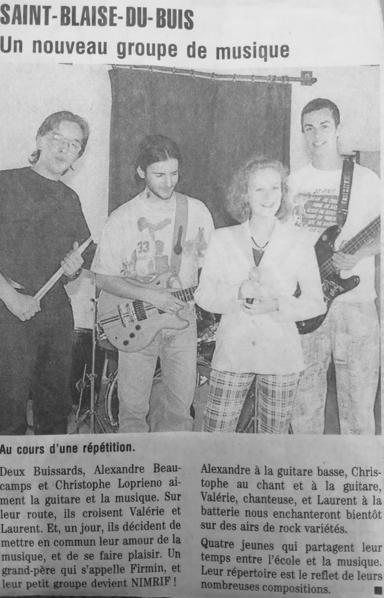En 1998 je débute la guitare et mon premier spectacle musical « C'est beau la vie » sur des textes écris au lycée. (utilisation d'un looper)
En 2001, j’intègre le cursus intensif de l'APEJS et me forme pendant trois ans auprès de Gaby VEGH (bassiste GNO, THE FUNKER, Elephante talk...).
Je fais l'apprentissage auprès de professionnels : polyrythmie, chant, théorie musicale, etc...
Ces formations se transforment en belles rencontres ; je multiplie les contacts me permettant d'intégrer de divers projets musicaux en Savoie:
de 2002 à 2003 création du groupe Mr Lemmings avec Jérémie GOLFIER
De 2003 à 2005 création du groupe NEWTON jazz fusion avec Jérémie GOLFIER aux keyboards , Jean batiste LOUIS au saxophone et Colin FALLET à la batterie.
La première maquette est enregistrée dans l'espace François MITERRAND situé à Montmélian.
En 2005, je débute la contrebasse en autodidacte et intègre rapidement un groupe de reprise de jazz qui donnera en 2006 la naissance de ALL JAM sur du jazz contemporain avec une écriture à trois : Pierre CHEMARIN à la batterie et Lionel COURAU au piano.
 alljamingwixsite.com
alljamingwixsite.com
2011 marque le début de l'apprentissage du UKULELE, toujours en autodidacte.
En 2016 une collaboration avec Jérémie GOLFIER-WINN sur son projet solo débute ; il en découle l’album ALL THE MOON. Nous avons effectué une résidence à l'espace Paul JARGOT à Crolles ainsi que différents tremplins musicaux.
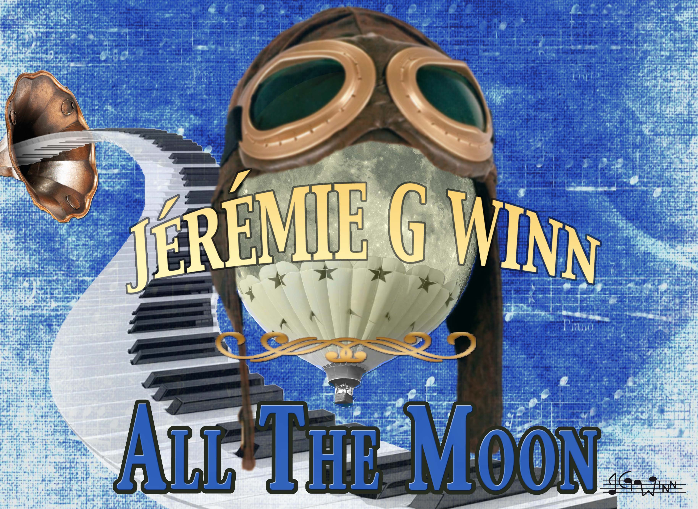 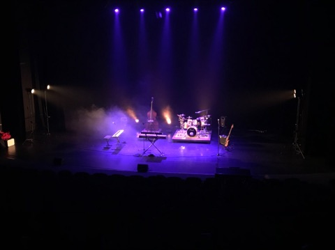 Jeremiegwinn.wixsite.comDe 2019 à 2022, de nouveaux projets avec les membres de All Jam ainsi que deux chanteuses Kristy VALENÇON-DAVID et Evodie AMIRA voient le jour sur des reprises réarrangées à 5 « SWIZELCOCKTEL »
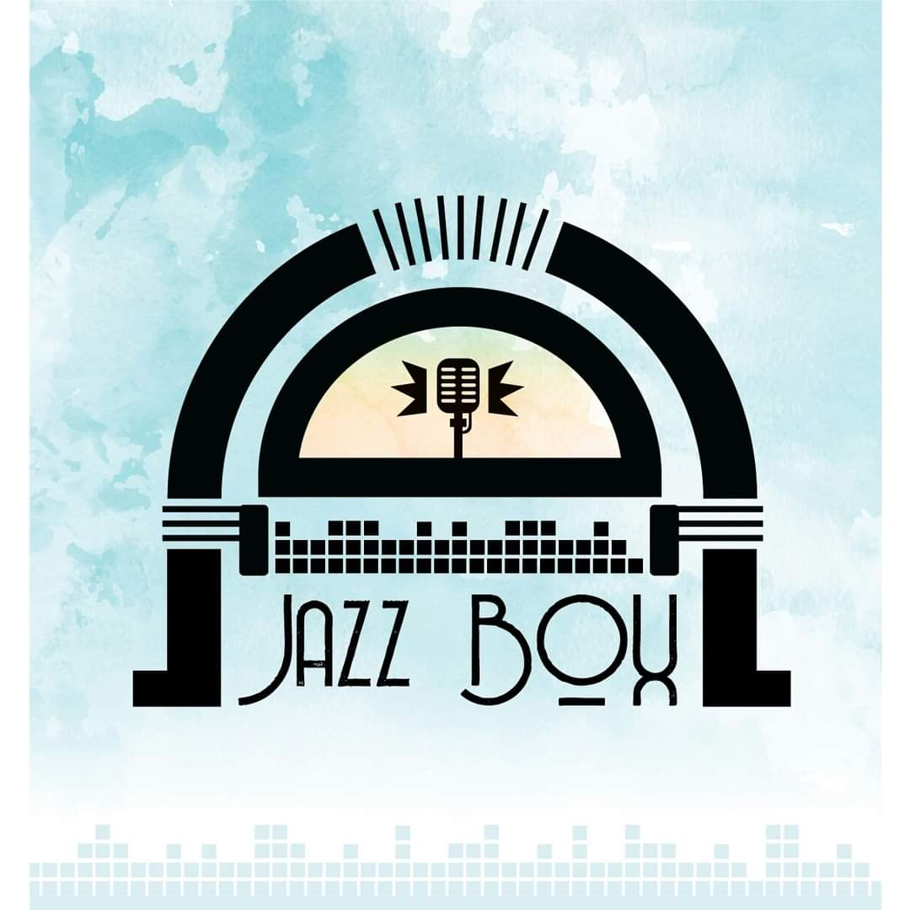2020 est aussi la création du groupe JAZZBOX73 et accompagnement de groupe vocal amateur . Nous proposons des reprises de chansons modernes en jazz destinées aux évènements tels que les mariages et autres festivités.
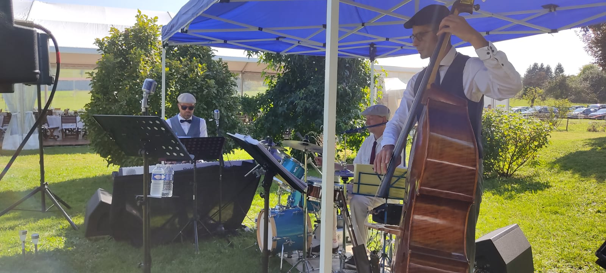 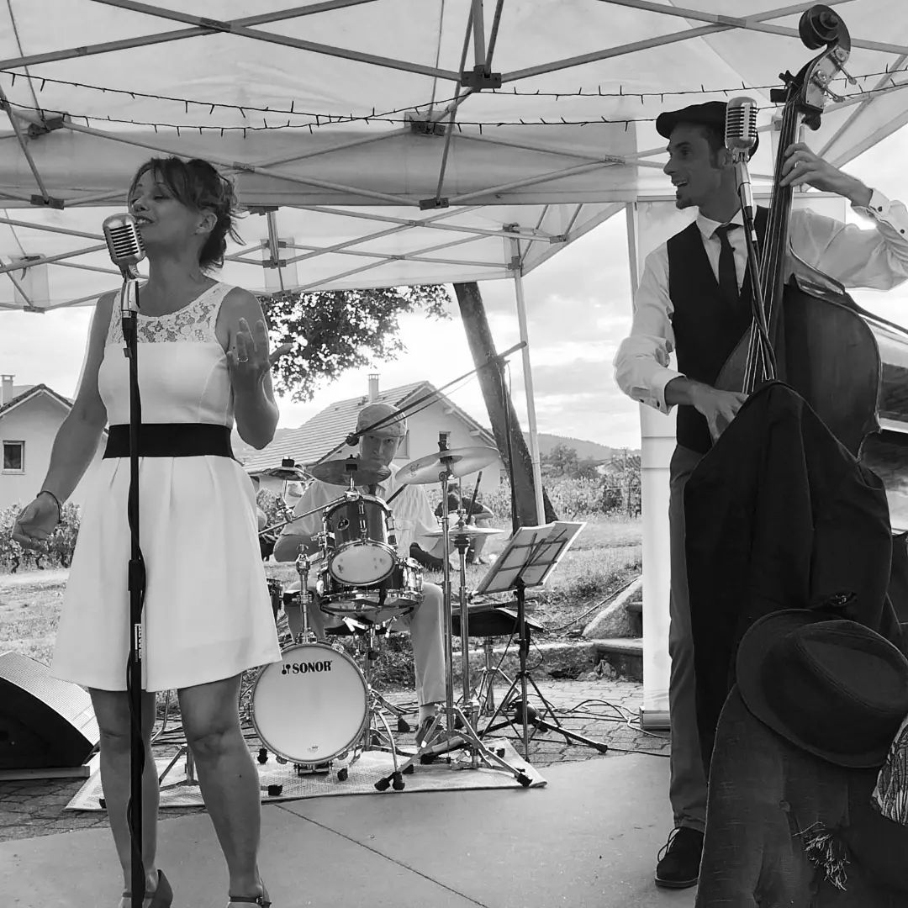 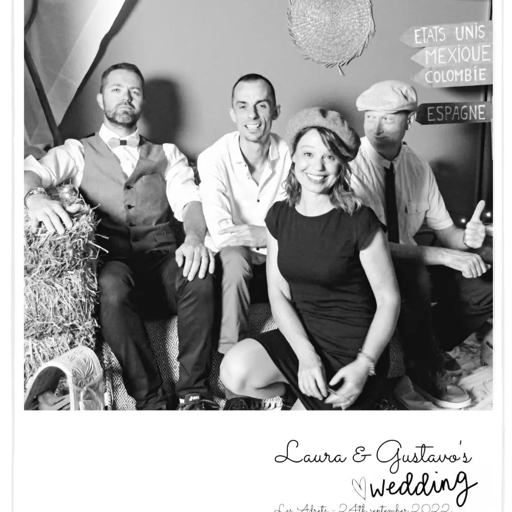 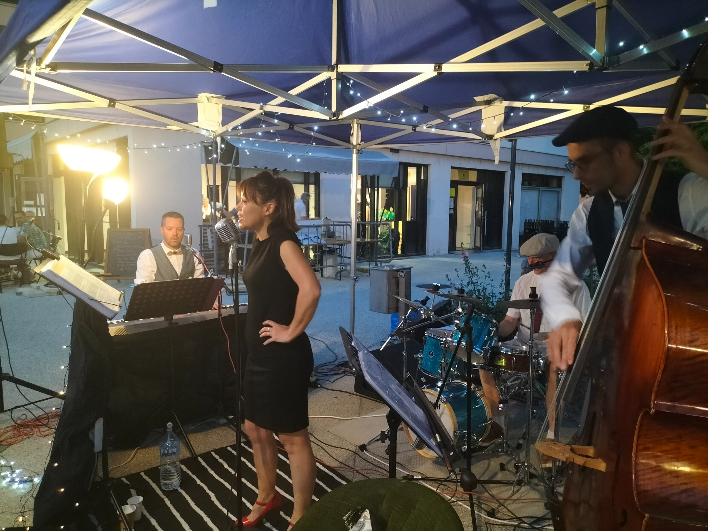 jazzbox73.wixsite.comEn 2021, je lance l' écriture et l' enregistrement d'un spectacle pour enfants « Scat le chat » dans lequel je chante et je joue la guitare, les percutions, l' harmonica.
Me rejoignent sur la scène Jérémie GOLFIER-WINN (basse - chant) et Kristy VALENÇON-DAVID (chant – percussions)
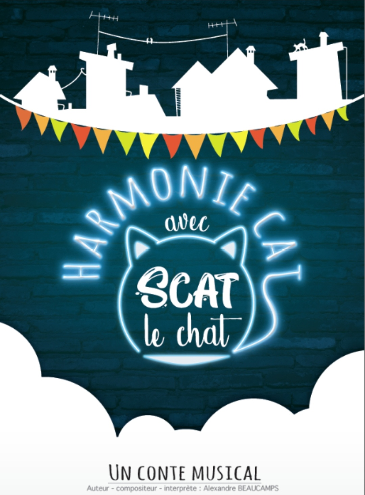 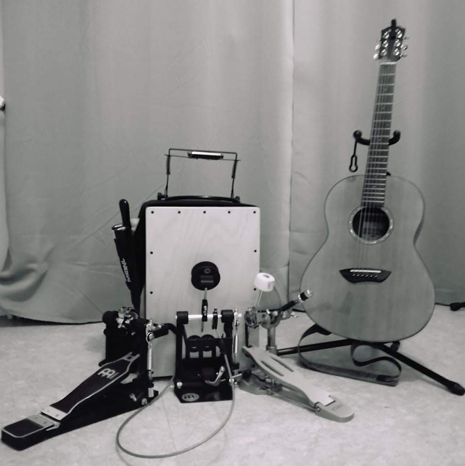Fin 2022, je décide de me lancer un défi en débutant le déchiffrage des grilles d'accords au piano.
En 2023 je mets en place JAZZ'SCOUZY , un karaoké vivant sur des morceaux des années 80 revisités en jazz dans lesquels je joue de la guitare.